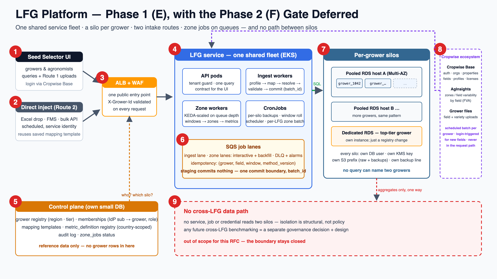

Seed Selector today joins Product Analyzer and FVA data in the browser — two key spaces reconciled by hand, filters applied after the response arrives. A real Large Farm Grower's volumes break that. The goal: one standalone LFG service (UI + backend) with one query contract, per-grower isolation from day one, and every external system consumed as a scheduled, one-way, inbound feed — never called at request time.

sub → grower + role, checked every request.bgf-records.json shape) via UI upload (Route 1) or direct inject from the grower's database (Route 2).| System | Direction | Cadence | What crosses |
|---|---|---|---|
| Cropwise Base — login/orgs/properties/fields | inbound | token per request (verify only) · master-data sync scheduled | identity claims; org/property/field records → control plane |
| AgInsights — FVA / zones per field | inbound | batch per grower + login-triggered (new fields) | zone geometries + variability metrics → immutable window vintages |
| Product Analyzer — variety + performance | inbound | scheduled | variety/performance records + divergence report (Q4) |
| Grower uploads / DB | inbound | ad hoc (Route 1) · scheduled (Route 2) | bgf-shaped rows through mapping → validation → batch_id commit |
| Seed Selector UI | serving | per request | query results from ONE silo only; tenant-guard enforced |
| Anything cross-grower | blocked | — | nothing until the Phase 2 gate exists (governance first) |
Standalone LFG service on Seeds infra, silo per grower from day one. Each step is releasable; nothing later reworks anything earlier. Phase 1 is deliberately split into two milestones so it doesn't read (or plan) as one monolith:
Steps 1–7 (epics A–F): foundations, identity, sync, model, Route 1 only, zones, serving contract — enough to run the pilot grower end to end with UI upload. ~95 points.
Steps 8–9 (epics G–I): Route 2 only after the pilot validates Route 1's templates (unless a signed business requirement says otherwise), then hardening + pilot sign-off. ~35 points.
sub → grower, role); tenant guard on X-Grower-Id; silo provisioning automation (DB → user → migrations → secret → registry row).Exit: non-member gets 403; "create grower" produces a working silo.metric_definition registry (metrics as rows; country-scoped; seeded with the bgf keys) + catalog-driven migrations across silos.Exit: same migration applied to every silo by one command.entity_alias) → validation → single commit boundary (batch_id) with per-row rejects and batch rollback.Exit: a real bgf file becomes fact rows; rollback removes exactly its rows.variability_window vintages; batch-per-grower scheduler; Seed Selector login trigger for newly created fields.Exit: login → new field zoned while the session is still open.SELECT).Exit: the UI renders the analysis with zero client-side joins.Reads exactly what Phase 1 built. Deferring costs nothing; retrofitting silos onto a pooled store is the migration nobody wants.
metric_definition.Exit: benchmark reproducible from gate outputs alone.| Layer | Picked | Alternative | Why the pick / when the alternative wins |
|---|---|---|---|
| Backend framework | NestJS (TypeScript) | Fastify (plain) · Spring Boot | guards/middleware/DI map 1:1 to tenant-guard + pool-per-grower; team TS skills. Plain Fastify if Nest's structure ever feels heavy; Spring only if the org mandates JVM. |
| Frontend | React + TypeScript | keep the static console | Seed Selector is the host app — matching its stack (and Cropwise design system) makes embedding natural. The zero-build console stays for internal ops. |
| Database | RDS PostgreSQL + PostGIS | Aurora PostgreSQL | PostGIS required. Silo = a logical database per grower; several share one pooled Multi-AZ host (not instance-per-grower), which is cheapest on RDS. Aurora when a pooled host nears ~1 TB or needs read replicas. |
| Queue | SQS + DLQ | MSK (Kafka) | work distribution ≠ event streaming. MSK only if multiple consumers ever need replayable history — alongside, not instead. |
| Compute | EKS + KEDA workers | ECS Fargate | Chosen for existing team, IaC and Kubernetes capability — not because EKS is inherently superior. ECS Fargate is the simpler greenfield pick; CronJobs + KEDA workers happen to map 1:1 to what we run. Revisit if cluster upkeep exceeds ~10% of team time. |
| Identity | Cropwise Base (JWKS verify) | — | no alternative by design: token = WHO only; roles and grower scoping live in OUR membership table (near-real-time revocation, ≤60 s — the guard cache TTL; no claim coupling). |
| IaC / CI | Terraform · CircleCI | CDK · CodePipeline/GH Actions | existing code and contexts; stages are portable if a mandate changes. |
| Local dev | docker-compose: Postgres + LocalStack | shared dev AWS account | the same SDK calls hit LocalStack locally and AWS in prod; zero cloud cost per developer. A dev account only for integration testing against real IAM. |
| Observability | CloudWatch first | Managed Prometheus/Grafana | zero extra infra now; adopt AMP/AMG at high-cardinality per-grower metrics. |
Nine phase-1 epics (A–I) + one phase-2 epic (J), strictly ordered; tickets inside an epic can parallelize unless a dependency says otherwise. Points are relative (1 ≈ half a day, 8 ≈ a week). Every ticket inherits the global Definition of Done (§15 of the engineering doc).
| ID | Ticket | Acceptance criteria | Deps | Pts |
|---|---|---|---|---|
| LFG-1 | Terraform baseline — VPC (public/private), EKS + node group, RDS host, S3 (raw/backups, versioned), SQS, ECR; sandbox + production from one codebase. |
| — | 8 |
| LFG-2 | CI/CD pipeline — test → build → push ECR (SHA tag) → deploy sandbox → manual gate → deploy prod. |
| LFG-1 | 5 |
| LFG-3 | Observability baseline — structured JSON logs (grower_id + request id), base dashboards, alarm plumbing (5xx, pod restarts). |
| LFG-2 | 3 |
| ID | Ticket | Acceptance criteria | Deps | Pts |
|---|---|---|---|---|
| LFG-4 | Cropwise Base token verification — JWKS fetch + cache, issuer/audience/expiry checks; extract sub, email. |
| LFG-2 | 5 |
| LFG-5 | Registry, memberships, tenant guard — grower registry (region/tier); memberships (sub→grower, role); guard validates X-Grower-Id per request (cached ≤60 s). |
| LFG-4 | 5 |
| LFG-6 | Silo provisioning automation — create DB → DML-only user → migrations → Secrets Manager entry → registry row; catalog-driven migration job for all silos. |
| LFG-5 | 8 |
| LFG-7 | Cropwise Base master-data sync — scheduled inbound job: orgs/properties/fields → control plane; conflict rules (CB wins for identity). |
| LFG-6 | 5 |
| ID | Ticket | Acceptance criteria | Deps | Pts |
|---|---|---|---|---|
| LFG-8 | Core silo schema — grower/farm(country)/field(boundary)/field_season; fact_rows with batch_id; vintages; aliases; batches (per the RFC fig-3 model). |
| LFG-6 | 5 |
| LFG-9 | metric_definition registry — key/unit/type/min-max/enum, crop + country scoping, since_season; seeded with the bgf keys (yieldPerAc, tuberScore, returnPerAc, pd*, vxc, heterogeneity, consistency, …). |
| LFG-8 | 3 |
| ID | Ticket | Acceptance criteria | Deps | Pts |
|---|---|---|---|---|
| LFG-10 | Raw upload path — presigned S3 PUT to lfg-raw/<grower>/raw/; ingest_batch row registered; async processing via queue. |
| LFG-8 | 5 |
| LFG-11 | Profile + mapping UI + template save — header parse, sample rows, type/unit inference; column→canonical mapping screen; template stored per grower (versioned). |
| LFG-10 | 8 |
| LFG-12 | Entity resolution worklist — unknown field/variety names queue to a worklist; each fix stored as entity_alias; aliases shared by both routes. |
| LFG-11 | 5 |
| LFG-13 | Validation engine + reject report — required/units/duplicates/ranges from metric_definition (country-aware); geometry checks; per-row verdicts; downloadable report. |
| LFG-11 | 5 |
| LFG-14 | Commit boundary + rollback — transactional chunk commits, every chunk stamped with the same batch_id (consistent with LFG-13); the batch still rolls back as a unit (one delete-by-batch); provenance query (row → batch → file → actor → template version). |
| LFG-12, LFG-13 | 5 |
| ID | Ticket | Acceptance criteria | Deps | Pts |
|---|---|---|---|---|
| LFG-15 | SQS lanes + worker skeleton — interactive + backfill queues, DLQ + alarm, KEDA scaling, idempotency tuple (grower, field, window, method_version), zone_jobs status. |
| LFG-8 | 5 |
| LFG-16 | AgInsights client — fetch zones/variability by field; auth; rate-limit token bucket; S3 response cache so retries never re-pay a call. |
| LFG-15 | 5 |
| LFG-17 | Window vintages + compare API — immutable variability_window versions; supersede on recompute; latest-window default; side-by-side compare endpoint; zone metrics (pd_spread, weighted_pd) as fact rows. |
| LFG-16 | 5 |
| LFG-18 | Batch-per-grower scheduler — EventBridge cron walks a grower's fields, enqueues missing/next windows on backfill lane, throttled; per-grower progress visible. |
| LFG-17 | 3 |
| LFG-19 | Seed Selector login trigger — login event → enqueue that grower's newly created fields (no vintage yet) on the interactive lane. |
| LFG-17, LFG-7 | 3 |
| ID | Ticket | Acceptance criteria | Deps | Pts |
|---|---|---|---|---|
| LFG-20 | The one query API — join + variability + PD-threshold filters at source; pagination; the fig-4 fan-out (PD spread, weighted PD) in a single request. |
| LFG-14, LFG-17 | 8 |
| LFG-21 | Seed Selector UI integration — React views on the contract: analysis chart/table, upload flow (LFG-11), worklist, zone status; embedded in Seed Selector's shell. |
| LFG-20 | 8 |
| ID | Ticket | Acceptance criteria | Deps | Pts |
|---|---|---|---|---|
| LFG-22 | Scheduled runner — service identity, saved-template reuse, idempotency by file hash + template version, DLQ for failed batches. |
| LFG-14 | 5 |
| LFG-23 | Grower DB/FMS connector — pull bgf-shaped records from a grower database/endpoint on schedule; unresolved names to the worklist without blocking. |
| LFG-22, LFG-12 | 5 |
| ID | Ticket | Acceptance criteria | Deps | Pts |
|---|---|---|---|---|
| LFG-24 | Backups + restore drill — per-silo hourly(10 d)/daily(30 d)/monthly(12 mo) + PITR; freshness alarm; one silo restored in sandbox. |
| LFG-14 | 5 |
| LFG-25 | Security pass — WAF rules, throttling, secrets rotation, pgAudit, immutable audit log, sandboxed file parsing review. |
| LFG-20 | 5 |
| LFG-26 | Dashboards + alarms — ingest failure rate, queue depth/age, DLQ non-empty, pool saturation, backup freshness, AgInsights error rate. |
| LFG-15 | 3 |
| LFG-27 | DR runbook + tabletop — region-loss runbook written; ECR + S3 cross-region replication verified; tabletop exercise held. |
| LFG-24 | 3 |
| ID | Ticket | Acceptance criteria | Deps | Pts |
|---|---|---|---|---|
| LFG-28 | Pilot grower onboarding — real grower through the full path: provision → CB sync → Route 1 upload → zones → serving API. |
| all A–H | 5 |
| LFG-29 | Pilot verification & sign-off — reconciliation vs source files; PA-divergence report reviewed (Q4); ops cadence started; go/no-go review. |
| LFG-28 | 3 |
| ID | Ticket | Acceptance criteria | Deps | Pts |
|---|---|---|---|---|
| LFG-30 | Governance package (no code) — cohort threshold, audit/export policy, review cadence, sign-off owners. Runs in parallel with P1-PROD (planning-independent); only LFG-31+ waits for its signature. |
| — (parallel) | 3 |
| LFG-31 | Aggregation gate service — the only cross-silo credential; min-cohort in code; audited exports; no row egress path. |
| LFG-30 | 8 |
| LFG-32 | Benchmark / model layer — successful-field benchmark from gate outputs; similarity scoring with favourable-direction semantics. |
| LFG-31 | 8 |
| LFG-33 | Recommendations into silos — results delivered per grower with explanations (matches/gaps/analogues). |
| LFG-32 | 5 |
The ten questions a design review should ask, answered in advance. (Several were raised in pre-review and are incorporated above.)
| # | Challenge | Answer |
|---|---|---|
| 1 | Silo-per-grower is an operational burden — provisioning, migrations, backups, credentials, monitoring across many DBs. | Definition first: logical isolation = one PostgreSQL database per grower (own user, KMS key, S3 prefix, backup line); physical = many databases sharing a few pooled Multi-AZ RDS hosts — not instance-per-grower. Target: tens of growers at pilot, low hundreds at scale. Every per-silo operation is a catalog-driven job, never a human task (provisioning LFG-6; migrations with per-silo failure reporting; backup-freshness alarms LFG-24/26). Beyond hundreds: silo tiering behind the same registry — a placement policy, not a redesign. Pooled-then-migrate was rejected as strictly worse. Ops detail: engineering design §10/§17. |
| 2 | "Everything is scheduled" contradicts the login-triggered AgInsights job. | Fixed in §2: login only enqueues (fire-and-forget, at-least-once, idempotency-absorbed); the fetch runs on the worker exactly like the batch. Login-triggered is a scheduling signal, not a runtime dependency — login can never block or slow on it. |
| 3 | 2 GB uploads: profiling, validation and rollback need a resource strategy, not just "async". | Added to LFG-10/13 scope: streamed parsing (never whole-file in memory; profiling reads the first N MB), chunked validation with bounded worker memory (requests/limits + one file per worker at a time), batch commit in chunked transactions grouped under one batch_id (rollback stays a single DELETE WHERE batch_id), per-stage timeouts, and resume-from-chunk on retry keyed by file hash + offset. |
| 4 | p95 < 800 ms is asserted against a vague "LFG-sized silo". | Benchmark now defined (LFG-20 AC): synthetic silo of 250 fields × 6 seasons × 65 varieties ≈ 100k field_season_metric rows + 1,500 zoning vintages (≈ 20× the 391-row bgf sample), at 20 concurrent requests, PD-threshold changed per request (worst case: benchmark re-selection). This is tractable because zone metrics are pre-computed rows — the query is indexed SQL, not geometry math at request time. Load test is part of the ticket's DoD, with the dataset generator committed. |
| 5 | What if AgInsights is down for hours or days? | Serving never touches AgInsights, so nothing breaks — data goes stale, which the UI must say honestly: every vintage carries its window + computed-at date; the UI shows a freshness badge ("zones as of <date>") and an explicit "zoning pending" state for never-zoned fields — distinct from an error state. Jobs stay queued and drain when AgInsights returns; the backfill scheduler self-heals missed runs; a >24 h feed-staleness alarm pages ops, not the user. |
| 6 | Master-data sync only says "CB wins" — what about deletes, renames, moves, duplicates? | Explicit rules added to LFG-7: delete in CB → soft-delete in LFG (fact rows keep their field reference; field hidden from pickers; orphan report generated — grower data is never cascaded away). Rename → update display name, keep id + aliases. Property move → re-parent, history retained. Duplicate identity → sync flags it to a reconciliation worklist (human decision, like entity aliases). Every sync run emits a diff report; inconsistent states are surfaced, never silently merged. |
| 7 | Phase 1 is too big to be called one phase (~130 points). | Agreed — split in §3 into P1-MVP (pilot-ready, epics A–F, ~95 pts) and P1-PROD (hardening + Route 2 + pilot, ~35 pts). The go/no-go review sits between them; scope cuts land on P1-PROD, never on the isolation or commit-boundary foundations. |
| 8 | Route 2 may be over-designed before Route 1 is validated. | Epic G is now gated: it starts only after the pilot proves the mapping templates on real files — or on a signed business requirement. The primitives Route 2 needs (templates, aliases, commit boundary, idempotency) are all Route 1 deliverables anyway, so deferral costs nothing. |
| 9 | Noisy neighbours: one giant grower's upload or window roll starves everyone else. | Fair-share added to LFG-15: per-grower in-flight caps on both ingest and zone lanes (a grower can occupy at most K workers), the interactive/backfill lane split already protects users from bulk, and queue-age (not just depth) is the alarm metric so starvation is visible. A pathological tenant degrades their own throughput first. |
| 10 | Phase 2 stalls on governance (cohort threshold is legally/mathematically hard). | Two different dependencies, stated explicitly: engineering dependency — no Phase 2 code (LFG-31+) starts before the governance signature; planning dependency — none: the governance workstream (LFG-30) starts during P1-PROD, in parallel, owned outside engineering, so nobody is "waiting for Phase 1 to finish to start the Phase 2 requirement". And a stalled gate blocks nothing — Phase 1 delivers full value per grower without it. the threshold question is framed with established practice (minimum cell size + audited query budget, à la statistical disclosure control) rather than invented from scratch. Code (LFG-31+) waits for signature — that constraint is the feature, not the bug. |